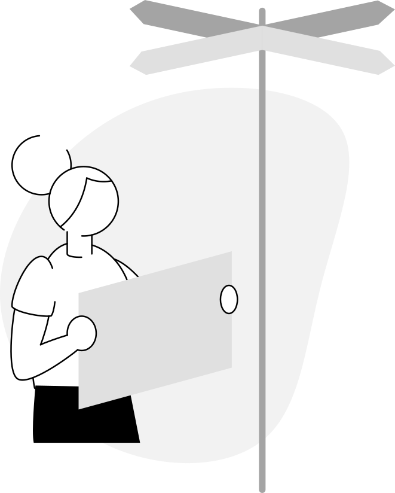
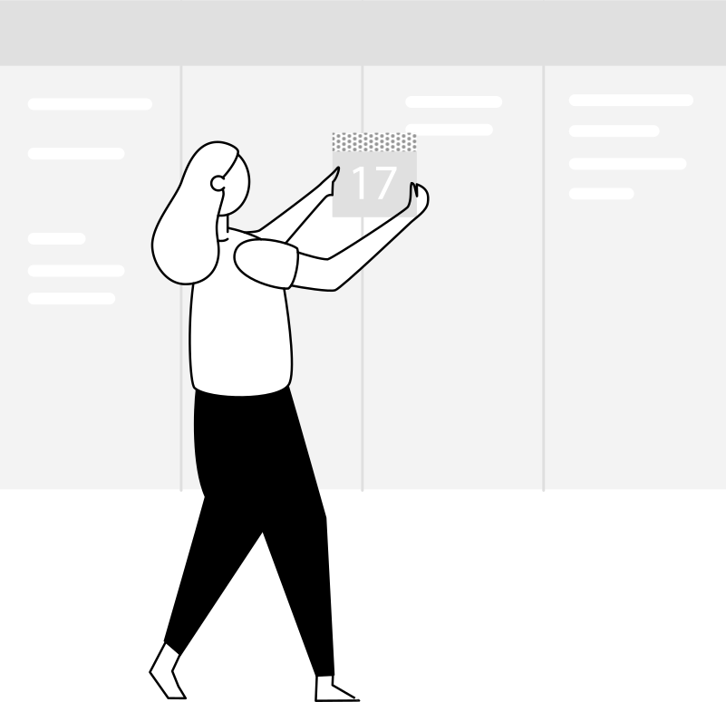

1 Check in
First things first, checking-in. The purpose of this is to align the team and to set the context of the session, and remember there are no wrong answers!
- Gather everyone in a circle and take out your phone and go to menti.com
- Enter the code and follow the instructions
- When the whole team has answerd click 'show results'
- Read out your own reply as its shown
- When you've gone full circle you're checked-in
2 Why and Background
When giving feedback it’s important to base it of past common experiences, like the philosopher Søren Kierkegaard said ‘Life can only be understood backwards; but it must be lived forwards’. So let’s go back in time with the intention to understand it.
- Gather everyone around the empty wall or whiteboard
- Create a timeline for the past project and together pinpoint the major events during this period, like; deadlines, project deliveries, team-days etc 
- Now take 10 minutes for individual reflection, ask yourself what’s been good and what's been bad during these events
- Write one reflection on one post-it, creating one pile of good and another of bad ones
- One by one go up to the wall and read out what you’ve written on the post-it, start with the good ones and place them above the timeline. Do the same thing for the bad ones but place them under the timeline.
- When everyone has put up their post-its it’s time for collective reflections, have an open discussion with the purpose of clarifying and understand each others perspectives.
- Together agree on five learnings for the future. Decide for one person to write them down and add them to menti
3 Feedback time - The Hand
Time for the official feedback exercise - The Hand. The exercise is divided into five different steps:
Thumb up A behaviour you like about the person
Point at Something you want to point out, make the person aware of
F**k u A behaviour you don't like in the person
To develop Something that you want to see more of in the person
That little extra Something that you appreciate about the person
- Get paper and post-its. Have one person for each post-it creating one post-it for each person
- Take 20 minutes to individually reflect and write down bullets for each of the five steps
- When everyone’s done it’s time to share the feedback
- Decide for one person to start receiving the feedback
- Then the rest of the team continue to share their feedback to that person
- Then do the same for the next person. Continue until everyone has given and received feedback from everyone in the team
4 Reflections and Insights
Now it’s time to round this session off. You have both received and given feedback to all team members, and it’s likely that some unexpected feelings and events took place, which is great but it’s important not to leave anything you've opened unfinished. For your own sake as well as the teams.
- Take a few minutes for individual reflection and write down your main take aways from what happened during the session
- Take out you phone and go to menti.com and enter your reflections
- When everyones done gather the team sitting in a circle and click 'show results'
- Read out your reply when its shown in the window and make sure to ask if somethings are unclrear
- Go full circle until everyone shared

5 Check out
And finally it’s time to check-out, the purpose is the like the check-in but opposite, closing this session in the same way you opened it.
- Gather everyone in a circle and take out you phone and go to menti.com
- Enter the code bellow and follow the instructions
- When the whole team has answerd click 'show results'
- One by one read out your reply when its shown bellow
- When you've gone full circle you're officially checked-out